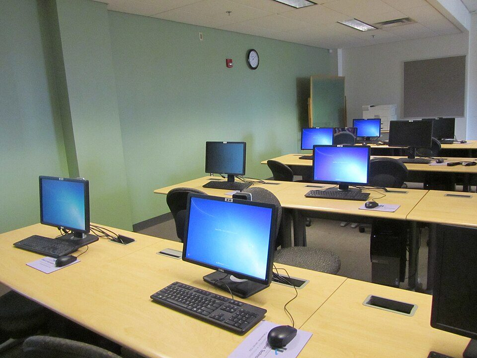
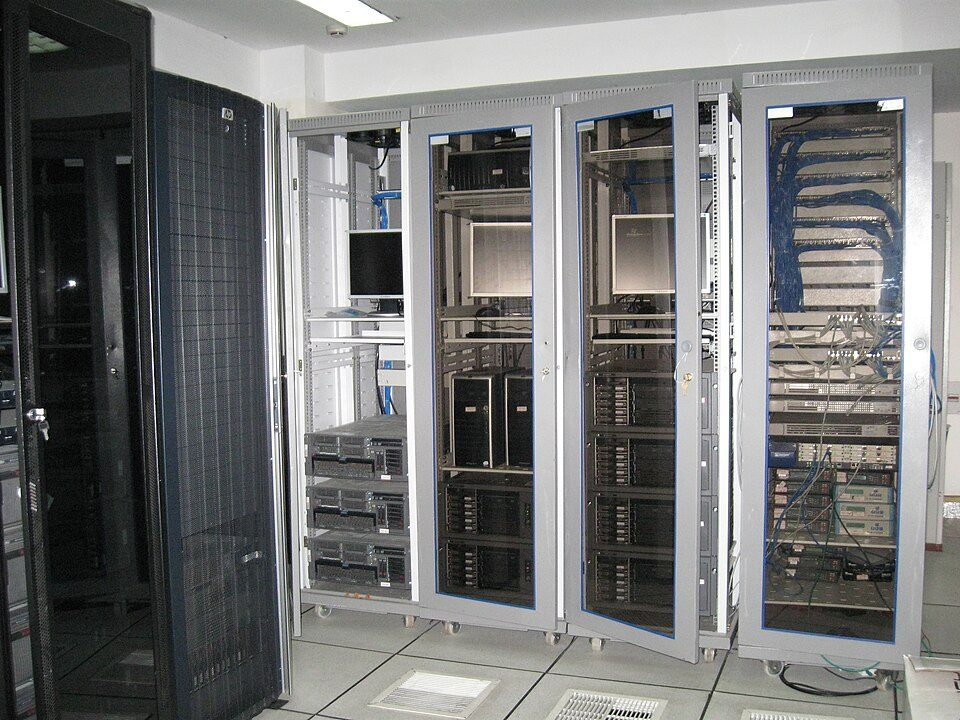

基本情報技術者試験の基本：科目A・Bの中身、合格率、2026年12月からの休止と新制度の案
要点まとめ
基本情報技術者試験（略称FE）は、IT（情報技術）を使ったシステムやソフトウェアを「つくる人」の基礎を問う国家試験です。IPA（情報処理推進機構）は試験区分のページで「ITエンジニアの登竜門」と紹介しています[9]。この記事では、ITパスポートの次に何を受けるか考えている人などに向けて、IPAと経済産業省の公表資料から、試験の位置づけと中身、2026年12月からの一時休止と新しい制度の案、合格率などの数字、受け方をまとめました。勉強のコツではなく、公式に決まっていることを中心にしています。

基本情報技術者試験はどんな試験？
IPAの試験区分一覧では、情報処理技術者試験は、求められる知識・技能の深さで段に分かれています。基本情報技術者試験は「基本的知識・技能」の段にあり、ITパスポート試験の「共通的知識」の上、応用情報技術者試験の「応用的知識・技能」の下に位置します[2]。
法律にもとづく国家試験
経済産業大臣が行い、IPAが実施の事務を担う
情報処理の促進に関する法律の第26条は、経済産業大臣が情報処理技術者試験を行うと定め、その実施の事務をIPAに行わせることができるとしています[1]。IPAは、この試験を、法律にもとづいて経済産業省が「知識・技能」が一定以上の水準であることを認定する国家試験と説明しています[10]。合格者には、経済産業大臣署名の合格証書が交付されます[8]。
対象は「ITを活用したものを作る人」
上位者の指導の下で、設計・開発・運用ができる水準
IPAは対象者像を、ITを活用したサービス、製品、システム及びソフトウェアを作る人材に必要な基本的知識・技能をもち、実践的な活用能力を身に付けた者、としています[9]。期待する水準として、上位者の指導の下にソフトウェアを設計できること、上位者の方針を理解して自らプログラムを作成できることなどを挙げています[9]。IPAは、ITエンジニアとしてキャリアをスタートするには、まずこの試験から受けることを勧めています[9]。
「レベル2」に相当する試験
作業の一部を独力でこなせる段階を想定
試験要綱は、FEを共通キャリア・スキルフレームワーク（IT人材の役割と能力の段階を整理した枠組み）のレベル2に相当するとしています[3]。レベル2は「基本的知識・スキルを有し、一定程度の難易度又は要求された作業について、その一部を独力で遂行できる」段階と定義されています[3]。シラバスの名前でも、SGとFEはレベル2、応用情報技術者試験（AP）はレベル3、高度試験はレベル4と示されています[11]。
受験資格の制限はない
学生でも社会人でも、誰でも受けられる
試験を実施する委託先の試験概要のページには、受験資格は「どなたでも受験可能」と書かれています[12]。
2026〜2027年：一時休止・再開と新制度の案
2026年は、試験のシステムの入れ替え（システムリプレース）のための一時休止と、2027年度からの新しい制度の案の公表が重なりました。日付の順に並べると、次のとおりです。
- 2025年4月16日
2026年4月27日以降の一時休止を予告
休止は1か月程度の予定とされていた[13]
- 2026年3月13日
システムの入れ替えを延期し、休止を2026年12月28日以降に変更
5月以降の試験の申込みは3月24日から受付[14]
- 2026年3月31日
2027年度からの新しい試験制度の案を公表
IPAは「現時点での検討状況」としている[5]
- 2026年7月31日
バウチャーチケットの購入受付を一時停止
- 2026年9月30日
新制度のFEのシラバス案（Ver.0.1）を掲載
IPAは、案の内容は変わる可能性があるとしている[15]
- 2026年11月5日
休止後の再開を2027年1月下旬の予定と公表
- 2026年12月27日
休止前の最後の試験日
会場によっては、これより前に終わる[4]
- 2026年12月28日
試験を一時休止
ITパスポート・SG・FEの3区分[4]
- 2027年1月中旬以降
申込みの受付を始める予定
- 2027年1月下旬
試験を再開する予定
- 2027年度春頃
新制度のFEが始まる見込み（案）
年内に受けたい人への注意
| 項目 | 内容 | 段階 |
|---|---|---|
| 一時休止 | 2026年12月28日から（ITパスポート・SG・FE）[4] | 公表済み |
| 再開 | 2027年1月下旬。申込みは1月中旬以降[4] | 予定（IPAは「現時点での予定」としている）[4] |
| 受験手数料 | 7,500円（税込）[8] | 政令で決まっている[16] |
| 今の制度の終わり | 2026年度の試験の実施で終える[5] | 予定 |
| 新制度の始まり | FEは2027年度春頃[5] | 見込み。遅れる可能性あり[6] |
| 新制度のFEの形 | 科目A 90分・60問、科目B 100分・20問[5] | 案 |
| 新制度の合格基準・手数料 | 今回調べた公表資料には見当たらない | 未公表 |
2027年1〜3月は、年度でいうと2026年度にあたります。IPAは今の制度を2026年度の試験の実施で終える予定としていますが[5]、再開後の試験がいつまで今の形式で、いつ新制度に切り替わるのかの具体的な日付は、公表資料に見当たりませんでした。
案 新制度でもFEは「継続」
案では、試験時間も問題数も今と同じ
2026年3月31日の案では、新制度は8区分で、FEは「継続」とされ、科目Aは90分・60問、科目Bは100分・20問です[5]。科目Aの出題範囲の体系の変更と、科目Bの出題範囲の一部変更が予定されていますが、IPAは、技術動向や環境変化などをふまえた表記の変更などで、試験で問う知識・技能の範囲そのものは変わらないと説明しています[5]。科目Aが免除される制度（第6章）も、変更を予定していないとしています[5]。
案 応用情報から上は、組み替える案
応用情報と高度試験を、3つの新しい試験に再編
案では、応用情報技術者試験と高度試験をまとめて内容を組み直し、「プロフェッショナルデジタルスキル試験（仮称）」として、マネジメント、データ・AI、システムの3つの区分を設けます[5]。経済産業省は、このうち1つの試験に合格することは、応用情報技術者試験の合格と同等と位置づけられると説明しています[6]。また、データの整備・管理のスキルを問う「データマネジメント試験（仮称）」を、ITパスポート試験の次のステップとして新しく設ける案です[5]。これらの開始は、2027年度夏頃から秋頃の予定です[5]。
開始の時期は「見込み」
経済産業省は、新制度の開始時期は現時点の見込みで、試験の準備状況によっては遅れる可能性があるとしています[6]。IPAも、公表内容は現時点での検討状況で、今後変わる場合があるとしています[5]。経済産業省のこの発表のページは、調査日には元のアドレスで表示されなかったため、インターネット上の保存版（2026年7月6日時点）で内容を確かめました。
試験の中身：科目Aと科目B
| 項目 | 科目A | 科目B |
|---|---|---|
| 問う内容 | 知識[3] | 技能[3] |
| 試験時間 | 90分[3] | 100分[3] |
| 問題数 | 60問（すべて解答）[3] | 20問（すべて解答）[3] |
| 採点に使う問題 | 60問のうち56問[3] | 20問のうち19問[3] |
| 形式 | 多肢選択式（四肢択一）[3] | 多肢選択式[3] |
| 合格基準 | 600点以上（1,000点満点）[3] | 600点以上（1,000点満点）[3] |
採点に使わない問題は、今後出題する問題を評価するために使われます[3]。科目Aと科目Bの両方が基準点以上のときに合格です[3]。
同じ日に、続けて受ける
科目Aのあと、最長10分の休憩をはさんで科目B
FEは科目Aと科目Bを同じ日に行い、科目Aが終わってから科目Bを始めるまでに、最長10分の休憩をとれます[3]。委託先の説明では、休憩の前にメモ用紙が回収され、10分たつと科目Bが自動で始まります[12]。
採点は「IRT」という方式
科目ごとに、1,000点満点の評価点で判定
ITパスポート、SG、FEは、IRT（Item Response Theory：項目応答理論）にもとづいて解答の結果から評価点を出し、それ以外の区分・科目は素点方式です[3]。FEは科目A・科目Bともに1,000点満点で、両方が600点以上なら合格です[3]。試験が終わるとすぐ、画面に科目ごとの評価点が表示されます[12]。
科目Bのプログラムは「擬似言語」
特定の言語ではなく、試験用に決めた書き方で出題
擬似言語は、試験のために書き方を決めた、説明用のプログラム言語です。試験要綱は、FEではプログラム言語として擬似言語を扱うとしています[3]。書き方（記述形式）は、IPAの資料「試験で使用する情報技術に関する用語・プログラム言語など」の別紙2にまとめられていて[19]、公開問題の科目Bの問題冊子の最初にも載っています[20]。
2023年4月に変わったこと
FEは2020年12月からCBT（試験会場のコンピュータで受ける方式）での試験が始まり、2023年4月からは、試験の形を変えたうえで通年の試験になりました[21]。今は、受験者が申込みのときに試験日時と会場を自分で選びます[22]。
試験時間が短くなった
午前・午後の合計300分が、科目A・Bの合計190分に
| 項目 | 変更前 | 変更後（現行） |
|---|---|---|
| 試験の時期 | 年2回（上期・下期の一定期間）[21] | 通年。日時と会場を自分で選ぶ[22] |
| 知識の試験 | 午前：150分・80問[21] | 科目A：90分・60問[21] |
| 技能の試験 | 午後：150分・11問から5問を解答（選択問題あり）[21] | 科目B：100分・20問すべて解答[21] |
| プログラム言語 | C、Java、Python、アセンブラ言語、表計算ソフト[21] | 擬似言語に統一[21] |
| 技能の試験の中心 | ― | 情報セキュリティと、データ構造及びアルゴリズム（擬似言語）[21] |
| 採点 | ― | IRTにもとづく方式[21] |
その前は、令和元年度まで春期・秋期に実施していました[9]。午前試験の免除制度は、科目A試験の免除制度として続いています[21]。
数字で見る基本情報技術者試験
IPAの統計では、今の方式になった令和5年度（2023年度）から、受験者は毎年増えています[7]。
| 年度 | 応募者 | 受験者 | 合格者 | 合格率 |
|---|---|---|---|---|
| 令和5年度 | 140,774人 | 121,611人 | 57,278人 | 47.1% |
| 令和6年度 | 157,259人 | 133,732人 | 54,501人 | 40.8% |
| 令和7年度 | 172,217人 | 147,186人 | 56,370人 | 38.3% |
| 令和8年度（4〜9月） | 78,551人 | 66,597人 | 26,398人 | 39.6% |
出典はIPAの統計資料（2026年10月21日現在）[7]。令和8年度は4〜9月の6か月分です。
600点に届かない人は、科目Bのほうが多い
令和8年9月は、科目Bで600点以上だった人は約48%
IPAの令和8年9月分の評価点分布では、評価点があった人は科目Aが10,373人、科目Bが11,315人でした[23]。点数の区分ごとの人数を筆者が合計すると、600点以上は科目Aが6,769人、科目Bが5,452人で、割合は科目A 65.3%、科目B 48.2%です。この月の合格者は4,744人でした[7]。
合格率は、学生がやや高い
令和7年度は学生40.9%、社会人37.3%
令和7年度の合格率は、学生が40.9%（受験者42,488人）、社会人が37.3%（受験者104,698人）でした[24]。合格者の平均年齢は25.8歳です[24]。これらの区分は、応募者が申込みのときに答えたアンケートにもとづいています[25]。
| 試験区分 | 合格率 | 数字の単位 |
|---|---|---|
| ITパスポート | 48.6%[27] | 年度の合計 |
| 情報セキュリティマネジメント | 70.0%[28] | 年度の合計 |
| 基本情報技術者 | 38.3%[7] | 年度の合計 |
| 応用情報技術者 | 22.1%、24.5%[29] | 年2回の試験の回ごと |
ITパスポート・SG・FEは通年の試験なので年度の合計、応用情報技術者試験は年2回の試験の回ごとの数字で、集計のしかたが違います。
以前の方式の合格率
2023年の変更より前の方式では、2019年度の2回の試験の合格率は22.2%と28.5%、2022年度の2回は39.6%と35.6%でした[29]。試験の形も採点のしかたも違うので、今の合格率とは単純に比べられません。
受ける手順と費用
FEの申込みは、IPAのページから、委託先の株式会社シー・ビー・ティ・ソリューションズ（CBT-S）のサイトに進んで行います[22]。申込みから合格証書までの流れは、次のとおりです。
受験手数料は7,500円（税込）
金額は政令で決まっていて、直近の改定は2021年
受験手数料は7,500円（消費税込み）です[8]。金額は情報処理の促進に関する法律施行令で定められています[16]。2021年7月に決まった改定で5,700円から7,500円になり、CBTで行う試験には2022年4月から適用されました[30]。そのあとの改定の発表は、今回調べた範囲では見当たりませんでした。
日時の変更は3日前まで、取り消しはできない
申し込んだあとのキャンセル・返金はできない
申込内容の変更は試験日の3日前までできますが、申込後のキャンセル・返金はできません[12]。予約できる受験日は、申込日から3日目以降で、空席がある日です[12]。試験開始から80分を超えて遅れると受験できず、その場合も受験手数料は返されません[12]。
受け直しは「30日を超えた日」以降
前回の受験日の翌日から数えて、30日を超えた日から
一度受験した区分を申し込み直すときは、前回の受験日の翌日から数えて30日を超えた日以降を受験日にできます（リテイクポリシー）[31]。例えば5月1日に受験した場合、次は6月1日以降に受けられ、受験手数料はあらためて必要です[12]。前回を欠席した場合は、この決まりは当てはまりません[31]。
認定講座の修了で、科目Aが1年間免除
免除されると、当日は科目Bだけを受ける
IPAに認定された講座を受講し、修了試験に合格する（修了認定の基準を満たす）と、FEの科目A試験が免除される制度があります[32]。免除は免除有効期間の開始日から1年間で、申込みには「修了認定者管理番号」が必要です[33]。申し込むときは「科目A免除（修了認定者）」の区分を選び、科目B（100分）だけを受けます[12]。
体の不自由な人への配慮と、筆記の試験
配慮を希望する人は、申込みの前に申請する
IPAは、目や耳・肢体など体の不自由な人に、受験上の配慮をしています[34]。CBTで受けられ、車いすや筆談対応などの特別な環境を希望する人は、予約の前に「配慮希望申請」をします[12]。CBTで受けられない人のためには、年2回、筆記による特別措置試験があり、申込みにはCBTでの受験が難しいことの証明書類が必要です[35]。令和8年度後期の特別措置試験は、2027年3月20日（土曜日）です[35]。
合格したあとと、公式の勉強資料

合格に有効期限はない
一度合格すれば、あとで無効になることはない
IPAは、試験合格に有効期限はなく、過去の試験合格が無効になることもないとしています[33]。合格発表は受験月の翌月中旬から下旬で、合格者には経済産業大臣から合格証書が交付されます[12]。
くわしく
- 制度が変わっても、昔の区分の合格が新しい区分の合格に自動で移るわけではない[33]
大学・短大の入試優遇や単位認定
IPAの一覧（Excel）で数えると、FEの入試優遇は107校
IPAの2024年7〜12月の調査では、情報処理技術者試験を活用している大学・短大は218校で、入試優遇は130校、単位認定は76校でした（いずれも、すべての試験区分を合わせた数）[36]。このうちFEを対象にしている学校を、IPAが公開している一覧（Excel）で筆者が数えると、入試優遇が107校、単位認定が53校でした[37][38]。最新の情報や詳しい条件は、各大学・短大の募集要項などで確かめるよう、IPAは案内しています[36]。
公的な採用・選考での使われ方
警察の採用やJICAの選考で、評価されることがある
警視庁や各道府県警察のサイバー犯罪捜査官などの採用では、情報処理技術者試験の合格を応募資格の一つにしたり、加点したりする制度があります。どの区分が対象かは、それぞれの募集で確かめる必要があります[39]。JICAの青年海外協力隊などの選考では、ITパスポート試験や基本情報技術者試験などの合格は強いアピールポイントになるとされています[39]。
ほかの国家試験の科目免除は、応用情報から
中小企業診断士試験・弁理士試験・技術士試験で一部の科目が免除されるのは、応用情報技術者試験や高度試験などの合格者で、IPAの説明にFEは含まれていません[39]。
講座によっては、教育訓練給付の対象
厚労省の検索で「基本情報技術者」の講座は9件
IPAは、厚生労働省の教育訓練給付制度の対象になっている情報処理技術者試験の講座もあると案内しています（講座の紹介や問い合わせには応じていません）[40]。厚生労働省の教育訓練講座検索システムで「基本情報技術者」と入れて検索すると、2026年11月17日時点で9件の講座が表示されました[41]。給付のしくみは教育訓練給付の記事にまとめています。
IPAが公開している勉強の資料
実際に出た問題の一部やサンプル問題を、無料で見られる
| 資料 | 内容 |
|---|---|
| 公開問題 | 実際に出題した問題の一部。令和5〜8年度の分がある[42]。令和8年度分（2026年7月1日公開）は科目A 20問・科目B 6問[43][20] |
| サンプル問題セット | 科目A 60問・科目B 20問（2022年12月26日公開）[31] |
| シラバス Ver.9.2 | 試験における知識・技能の細目。学習の指針として公開[44] |
| 擬似言語の記述形式 | 「試験で使用する情報技術に関する用語・プログラム言語など」の別紙2[19] |
| 試験要綱 Ver.5.6 | 試験時間・出題数・出題範囲・合格基準など[3] |
公開問題は、法令に特別の定めがある場合を除き、許諾や使用料なしで使えます（使うときの留意点があります）[42]。
公式の勉強時間の目安はない
IPAの公表資料には、FEの合格に必要な勉強時間の目安は見当たりませんでした。IPAが公開している合格者の学習実態のアンケートは、ITパスポート試験のものだけです[9]。ITパスポート試験については、1週間で合格するための勉強法、覚えておくべき重要ポイント、直前1週間の勉強法の記事にまとめています。
今回確認できなかった点
- 再開後の試験がいつまで今の形式で行われ、いつ新制度に切り替わるのか（具体的な日付）
- 新制度のFEの合格基準・採点のしかた・受験手数料と、新制度用のFEのサンプル問題
- 公式の勉強時間の目安（FEの合格者アンケートは公開されていない）
- 令和8年9月に、科目Aの評価点があった人が科目Bより少ない理由（科目Aの免除者と考えられるが、IPAの説明は見つからなかった）
- 以前の方式の推移表の「春期・秋期」の表記（表のページによって異なるため、季節を付けずに書いた）
- デジタルスキル標準（DSS）とFEの公式の対応
出典（44件）
閲覧日はいずれも2026年11月17日
- 情報処理の促進に関する法律（e-Gov法令検索）
- 試験区分一覧（IPA（情報処理推進機構））
- 試験要綱 Ver.5.6（PDF）（IPA（情報処理推進機構））
- CBT方式で実施するITパスポート試験、情報セキュリティマネジメント試験及び基本情報技術者試験における2027年1月以降の実施予定について（IPA（情報処理推進機構））
- 情報処理技術者試験及び情報処理安全確保支援士試験の見直しの検討状況について（IPA（情報処理推進機構））
- 情報処理技術者試験における試験区分体系などの見直し（案）について（保存版、2026年7月6日時点）（経済産業省）
- 基本情報技術者試験 統計資料 令和8年9月分（PDF）（IPA（情報処理推進機構））
- スケジュール、手数料など（IPA（情報処理推進機構））
- 基本情報技術者試験（試験区分のページ）（IPA（情報処理推進機構））
- 試験の概要（IPA（情報処理推進機構））
- 試験要綱・シラバスについて（IPA（情報処理推進機構））
- 基本情報技術者試験（FE）試験概要（株式会社シー・ビー・ティ・ソリューションズ（IPAの委託先））
- CBT方式で実施するITパスポート試験、情報セキュリティマネジメント試験及び基本情報技術者試験における2025年4月26日以降の受験申込みに関する重要なお知らせ（IPA（情報処理推進機構））
- CBT方式で実施するITパスポート試験、情報セキュリティマネジメント試験及び基本情報技術者試験における2026年5月以降の試験実施について（IPA（情報処理推進機構））
- 新試験制度のシラバス案について（IPA（情報処理推進機構））
- 情報処理の促進に関する法律施行令（e-Gov法令検索）
- 基本情報技術者試験 シラバス案 Ver.0.1（PDF）（IPA（情報処理推進機構））
- 新試験制度のサンプル問題について（IPA（情報処理推進機構））
- 試験で使用する情報技術に関する用語・プログラム言語など Ver.5.1（PDF）（IPA（情報処理推進機構））
- 令和8年度 基本情報技術者試験 科目B 公開問題（PDF）（IPA（情報処理推進機構））
- 情報処理技術者試験における出題範囲・シラバス等の変更内容の公表について（基本情報技術者試験、情報セキュリティマネジメント試験の通年試験化）（IPA（情報処理推進機構））
- 受験申込み：情報セキュリティマネジメント試験、基本情報技術者試験（IPA（情報処理推進機構））
- 基本情報技術者試験 評価点分布 令和8年9月分（PDF）（IPA（情報処理推進機構））
- 基本情報技術者試験 統計資料 令和7年度（PDF）（IPA（情報処理推進機構））
- 統計情報（基本情報技術者試験）（IPA（情報処理推進機構））
- 基本情報技術者試験 在学中の学校等 一覧表 令和8年9月分（Excel）（IPA（情報処理推進機構））
- ITパスポート試験 推移表 令和8年9月分（Excel）（IPA（情報処理推進機構））
- 情報セキュリティマネジメント試験 推移表 令和8年9月分（Excel）（IPA（情報処理推進機構））
- 情報処理技術者試験・情報処理安全確保支援士試験 推移表（平成21年度春期以降、PDF）（IPA（情報処理推進機構））
- 情報処理技術者試験 受験手数料の改定について（IPA（情報処理推進機構））
- 基本情報技術者試験、情報セキュリティマネジメント試験の通年試験に関するお知らせ（サンプル問題セット、リテイクポリシーの公開）（IPA（情報処理推進機構））
- 科目A試験免除制度 基本情報技術者試験（FE）（IPA（情報処理推進機構））
- 試験に関するよくある質問（IPA（情報処理推進機構））
- 障害をお持ちの方へ（お問い合わせ先）（IPA（情報処理推進機構））
- 通年試験：情報セキュリティマネジメント試験、基本情報技術者試験（令和8年度）（IPA（情報処理推進機構））
- 大学・短大における情報処理技術者試験の活用状況（IPA（情報処理推進機構））
- 大学・短大における入試優遇（Excel）（IPA（情報処理推進機構））
- 大学・短大における単位認定（Excel）（IPA（情報処理推進機構））
- 国家試験等の一部免除、公的制度の応募資格・募集条件など（IPA（情報処理推進機構））
- 教育訓練給付制度について（IPA（情報処理推進機構））
- 教育訓練講座検索システム（キーワード「基本情報技術者」で検索）（厚生労働省）
- 情報セキュリティマネジメント試験（SG）及び基本情報技術者試験（FE） 公開問題（問題冊子・解答例）（IPA（情報処理推進機構））
- SG・FE公開問題 問題冊子・解答例（2026年度、令和8年度）（IPA（情報処理推進機構））
- 基本情報技術者試験（レベル2）シラバス Ver.9.2（PDF）（IPA（情報処理推進機構））
写真・画像の出典（3件）
- パソコンが並ぶ大学のコンピューター教室（アメリカ）
写真: Antonio Chaves／Wikimedia Commons（CC BY-SA 4.0） - プログラムのコードが表示されたモニター
写真: Markus Spiske／Wikimedia Commons（CC0） - サーバー室に並ぶラック（インド鉄道）
写真: Indrajit Das／Wikimedia Commons（CC BY-SA 3.0）